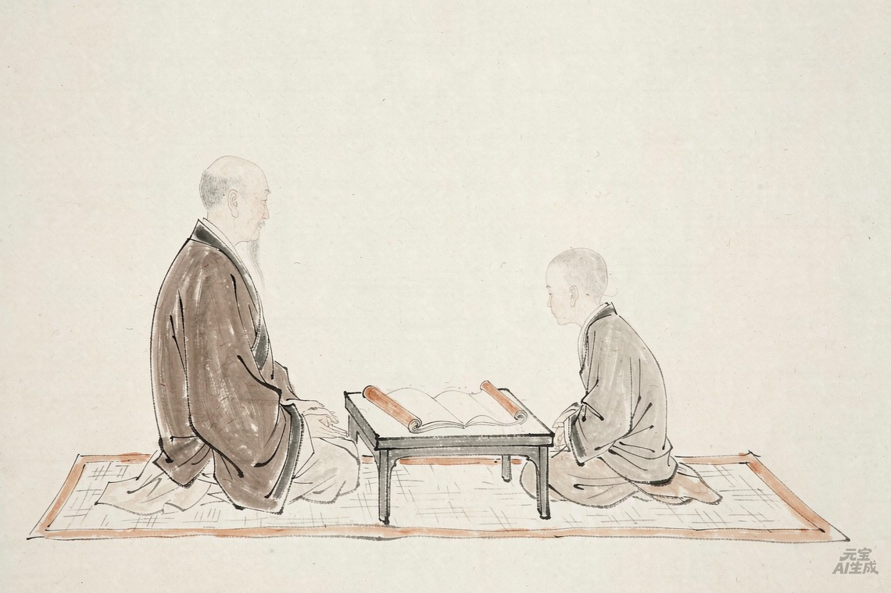
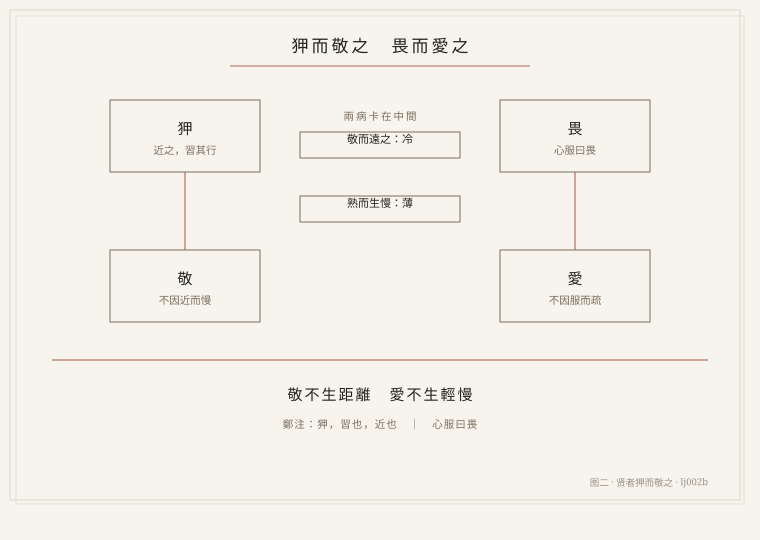

曲礼上 · 一·三 · 第 2 课
上一课立了「毋不敬」这条根，这一课马上给出敬的第一个对象：贤者。
说什么事：说与德胜于己者相处的分寸。近他，而不慢他；服他，而不远他。
落在哪一层：义。不是仪节——此处无一动作可照做；是说心该怎么摆。
为何编在此位：因为「敬」一立，最容易走成两条歪路：敬而远之，成了冷淡；亲而慢之，成了轻薄。这一句正卡在两条歪路中间，是「敬」字的第一次落地。放在第二课，是拿它给敬定温。
【经】賢者狎而敬之，畏而愛之。
狎 郑注：「狎，習也，近也，謂附而近之，習其所行也。」狎不是玩弄，是亲近、是跟着他学。郑引《月令》「雖有貴戚近習」，证狎即近习之义。今人多以「狎」为轻慢，是后起之义，此处不可用。
而 两处「而」都是转折兼黏合：既狎，又敬；既畏，又爱。一句里塞进两个反向的动作，正是此句的全部难处。
畏 郑注：「心服曰畏。」四个字定案。畏不是怕他，是心里服他。郑又引曾子「吾先子之所畏」，说这种畏是敬服，不是恐惧。
愛 爱在此不是私昵。与「畏」并举，是从服其德而生的一种亲。
句读 「贤者狎而敬之」的主语不是贤者，是与贤者相处的人。若读作「贤者待人，狎而敬之」，就变成了贤者的修养条目，与下句「畏而爱之」不相对。两句同主一「之」——那个贤者。
对贤者，要亲近他，又要敬重他；要心服他，又要爱他。
近之而不慢，服之而不疏。敬不生距离，爱不生轻慢。
第一层 近与敬 凡亲近，天然带着轻慢的势：见他吃饭睡觉、见他发火失手，那层「德」的光就淡了。所以「狎而敬之」不是两个动作并列，是一件事的两面——越近，越要记得他凭什么值得敬。这就是郑注「習其所行」的分量：跟的是他的行，不是他的热闹。
第二层 畏与爱 「心服曰畏」——畏的对象是他的德，不是他的位。服一个人而不爱他，服就成了隔；爱一个人而不服他，爱就成了黏。此句要求两者同时成立，等于说：真正让人服的德，本就会让人愿意亲近；真正亲近，也当以服为前提。
第三层 与今日何干 今日对「贤者」的处理常走两个极端：一是造神，敬到不能近，近了就失望；二是祛魅，近到不能敬，一熟就轻薄。此句给出的解法很朴素：把他的行当作要学的东西，把他的人当作可近的人。学到的东西越多，敬越实；人越近，爱越真。
| 左 | 右 |
|---|---|
| 狎：近他，学他的行 | 敬：越近越记得他凭什么可敬 |
| 畏：心服其德 | 爱：服而后愿亲，不是黏 |
| 敬而远之：冷，是第一种病 | 熟而生慢：薄，是第二种病 |
| 敬其德，不敬其位 | 敬其所能，不是敬其所与 |

